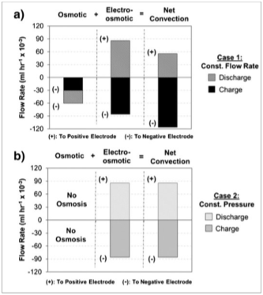

July 25th, 2012 - A new paper on crossover and related capacity loss in vanadium redox flow batteries has been published in Elec. Communications
ECSL team has published a new paper on crossover and related capacity loss in vanadium redox flow batteries titled "Role of Convection and Related Effects on Species Crossover and Capacity Loss in Vanadium Redox Flow Batteries" in Journal of Power Sources.
Abstract:
This study reports important observations regarding the convective transport through the membrane and related effects on the species crossover and the capacity loss in vanadium redox flow batteries (VRFBs). A 2-dimensional, isothermal, transient model is utilized to simulate several extended charge/discharge cycles with varying flow rates and electrolyte viscosities. The simulations indicate that osmotic and electro-osmotic convections in the membrane are major mechanisms contributing to species crossover. In addition, variations in electrolyte viscosity are observed to have significant impact on the direction and magnitude of species crossover during VRFB operation. Finally, the simulations suggest that one potential approach to minimize the capacity loss in VRFBs would be to operate the system at constant pressure condition through the utilization of asymmetric flow rates (i.e. different flow rates in the '+'' and '-' half cells) to reduce the impact of osmotic convection.
You can view this article and other publications in Publications.